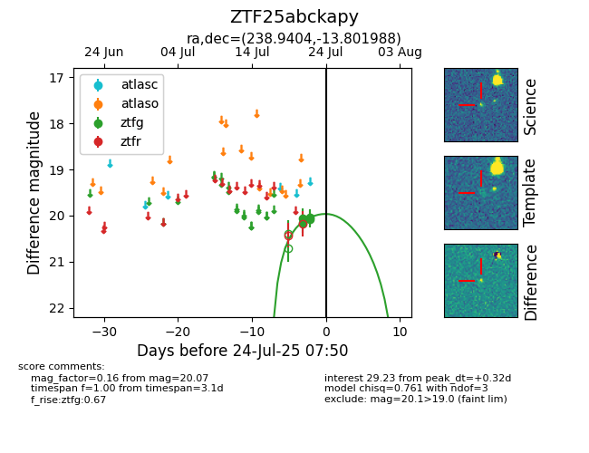

Target ZTF25abckapy at 2025-08-05 23:02, see:
FINK: fink-portal.org/ZTF25abckapy
Lasair: lasair-ztf.lsst.ac.uk/objects/ZTF25abckapy
ALeRCE: alerce.online/object/ZTF25abckapy
alt names
ZTF25abckapy (ztf,fink)
coordinates:
equatorial (ra, dec) = (238.9404,-13.80199)
galactic (l, b) = (356.3336,+29.38828)
photometry
last ztfg=19.93
6 ztfg detections
